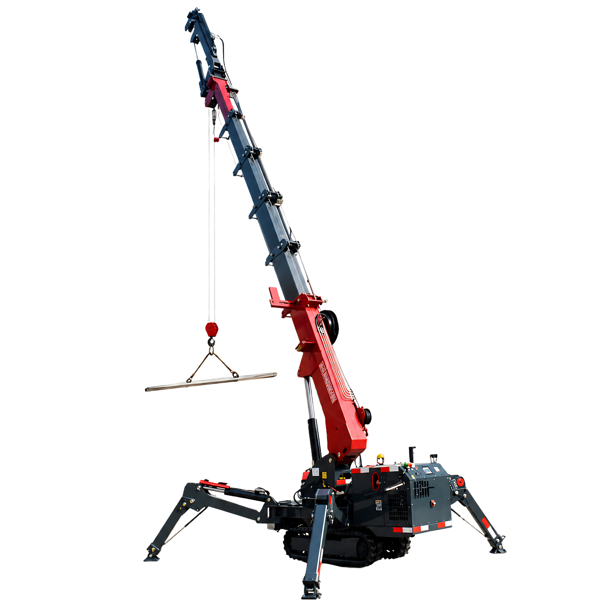
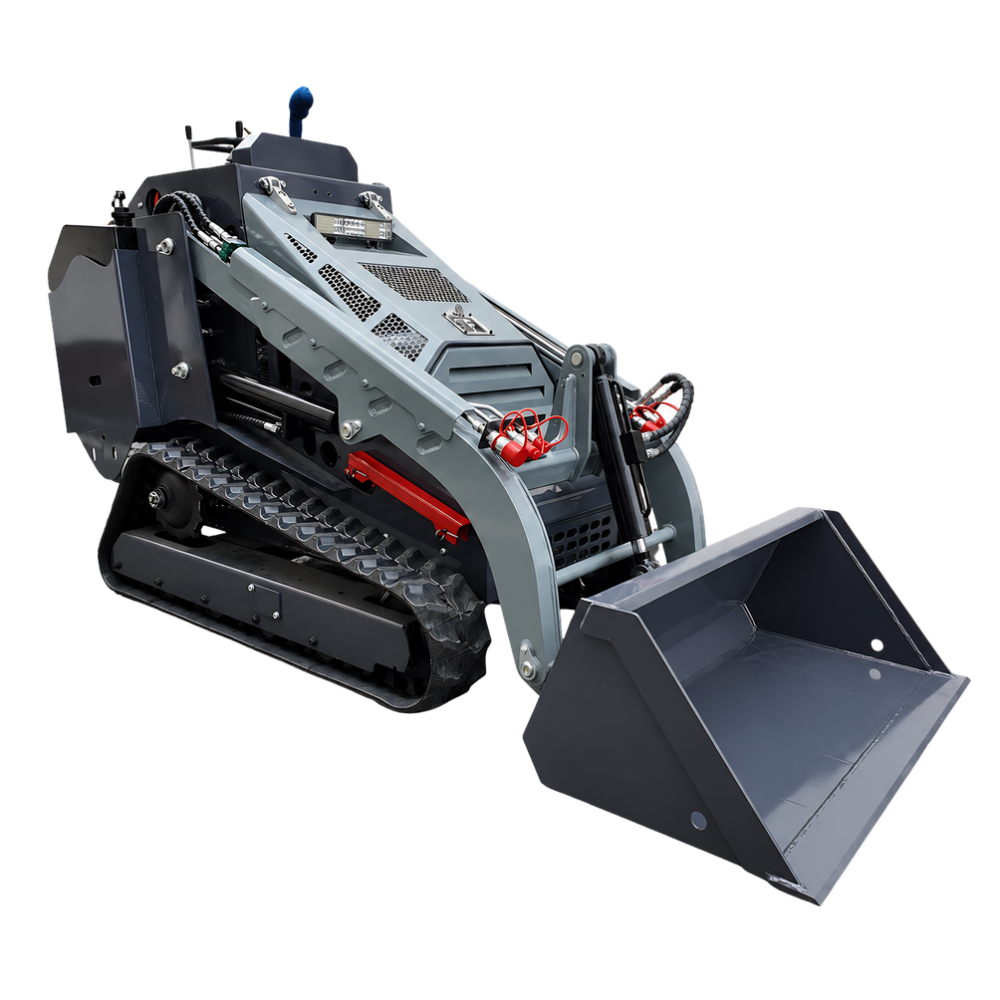
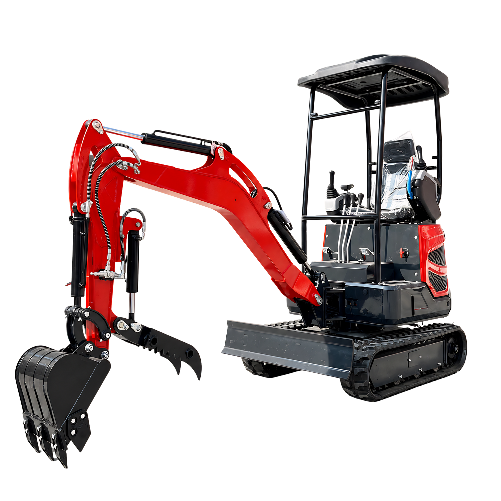
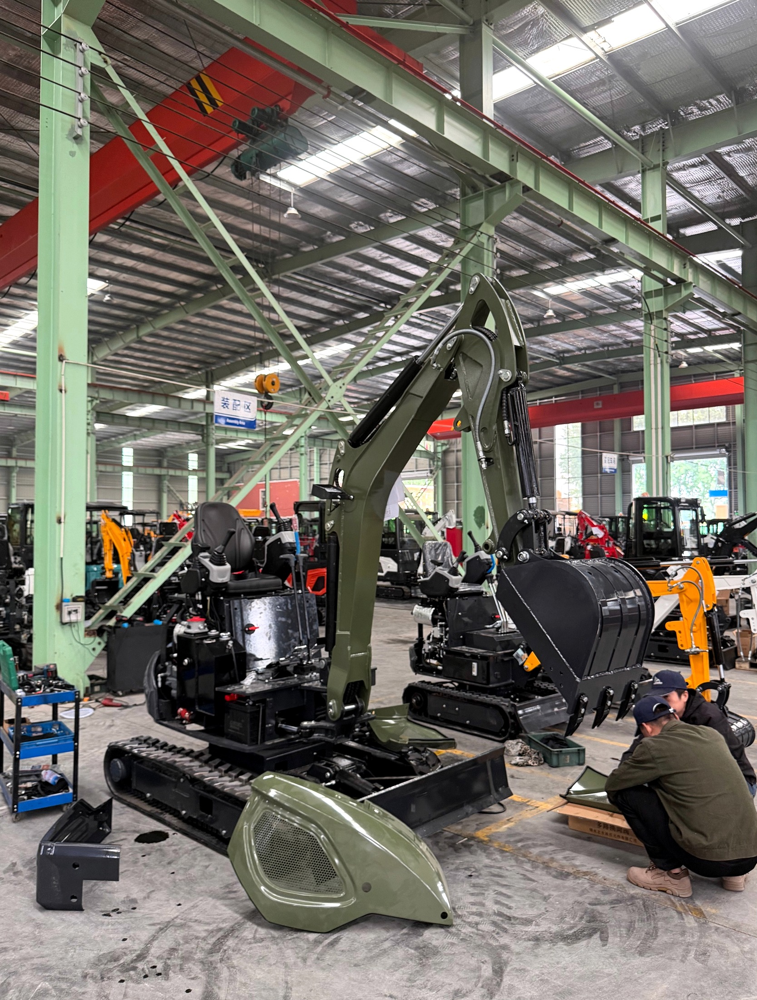
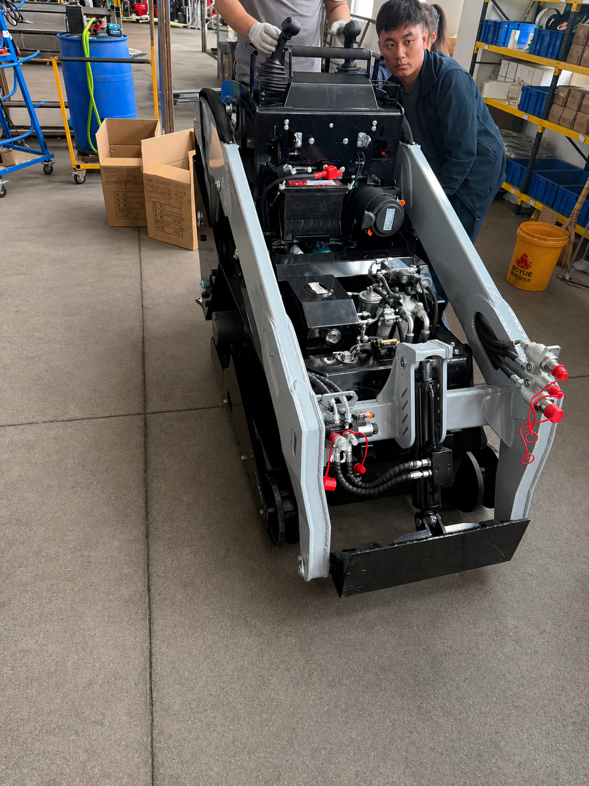
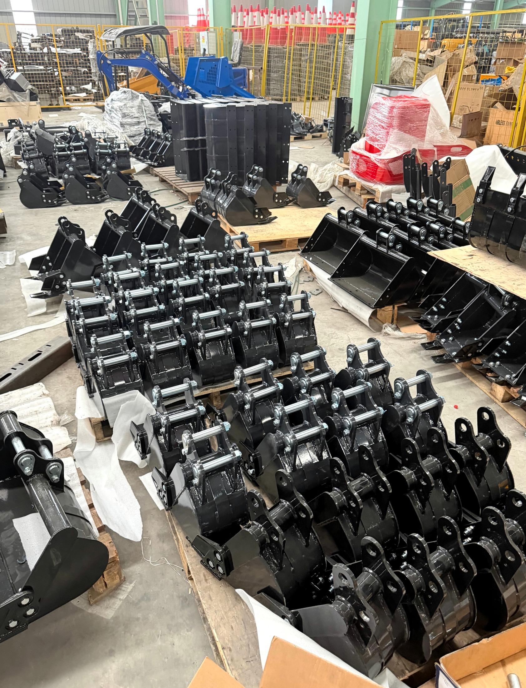
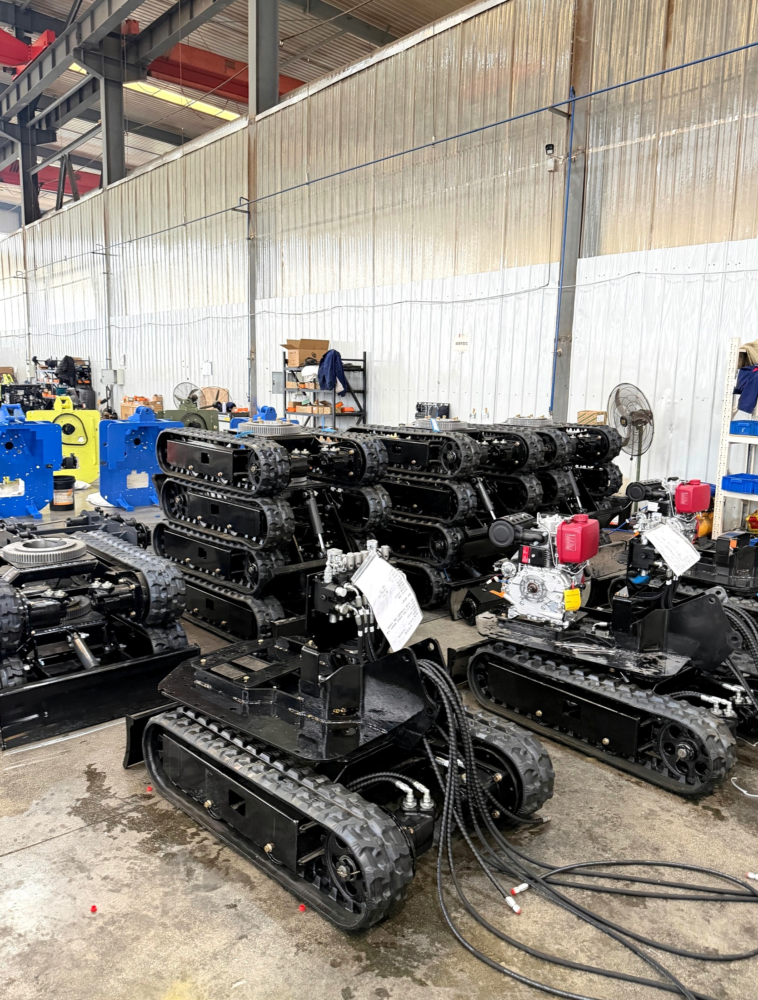
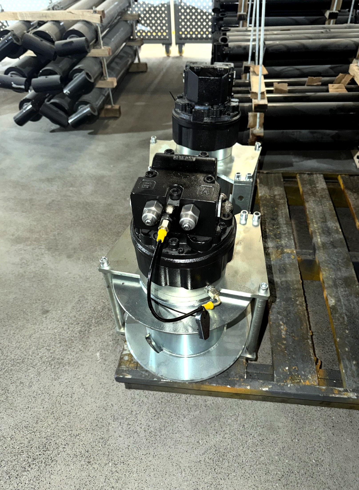
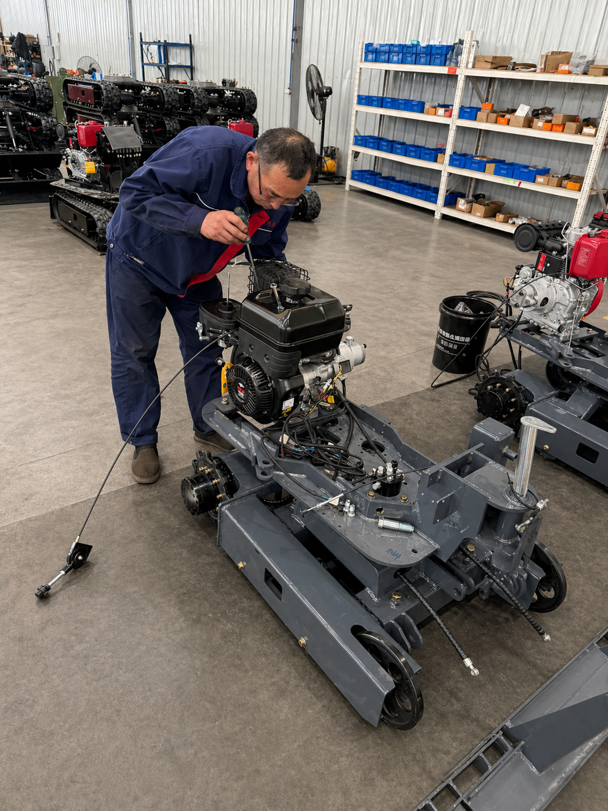

Canale diretto Cina / Italia
Macchinari da lavoro da produttori selezionati in Cina
Mini gru cingolate, mini escavatori e mini pale per aziende, rivenditori e noleggiatori che vogliono acquistare meglio: accesso diretto alla fonte produttiva, potenziale risparmio sui costi e supporto nella scelta del modello corretto.
- Preventivi da produttore, non da passaggi intermedi inutili
- Cataloghi tecnici, video reali e foto originali prima dell'acquisto
- Configurazione, accessori e documentazione da verificare sul modello esatto
- 16
- modelli selezionati
- 3
- famiglie di macchine
- CE / UE
- documentazione da verificare
- Fonte
- accesso diretto produttori



Canale diretto
Fabbrica, catalogo, video, preventivo
Non solo catalogo
Un canale di sourcing per chi compra, rivende o noleggia macchine
Il punto non è comprare una macchina cinese qualsiasi. Il punto è arrivare a produttori selezionati, capire le configurazioni, confrontare schede tecniche reali e valutare un prezzo da fonte produttiva.
Per un'impresa significa controllare meglio il costo di acquisto. Per un rivenditore o noleggiatore può significare maggiore spazio di margine, senza dover partire da ricerche casuali su marketplace generalisti.
Perché il sourcing diretto conta
Acquista meglio, non semplicemente a meno
Cercare da soli su Alibaba o su portali generici può sembrare rapido, ma spesso lascia aperte troppe domande: produttore reale, configurazione, ricambi, documentazione, video, trasporto, costi finali e comunicazione post-vendita.
Accesso diretto
Collegamento con produttori selezionati, utile per valutare listini, configurazioni, disponibilità e preventivi da fabbrica.
Confronto tecnico
Schede tecniche, immagini originali, video reali e dati modello aiutano a capire cosa stai comprando prima dell'ordine.
Controllo dei costi
Prezzo, configurazione, accessori, documentazione e costi di importazione vengono valutati sul modello specifico.
Canale ricambi
Per chi lavora, rivende o noleggia, la possibilità di richiedere anche ricambi e attrezzature compatibili è un elemento commerciale importante.
Per chi è pensato
Non per curiosi. Per chi compra macchine per lavorare, rivendere o noleggiare.
Gamma prodotti
Tre famiglie di macchine, un unico canale di accesso

01
Mini gru cingolate
Modelli da 3, 4 e 5 tonnellate per vetri, montaggi e manutenzioni. Ideali quando servono stabilità, precisione e dimensioni compatte.

02
Mini escavatori
Nove modelli da 800 kg a 6 t per scavi leggeri, edilizia, manutenzione, ristrutturazioni e cantieri dove il costo macchina incide sul margine.

03
Mini pale cingolate
Macchine compatte con benna frontale per movimentazione materiali, edilizia, verde e manutenzione. Soluzioni valutabili per lavoro, noleggio e rivendita.
Vuoi confrontare modelli e prezzo da produttore?
Richiedi catalogo, listino e informazioni sulla configurazione più adatta al tuo utilizzo o al tuo cliente.
Richiedi catalogo e prezzi
Catalogo selezionato
I 16 modelli disponibili nella selezione 2026
Ogni scheda mette in evidenza i dati decisivi per una prima valutazione: peso, portata, motore, dimensioni, prezzo indicativo e foto originali quando disponibili.
Per rivenditori e noleggiatori
Valuta un canale diretto invece di comprare a valle della filiera
Se compri macchine per rivenderle o inserirle in una flotta noleggio, il prezzo di acquisto e la chiarezza della configurazione fanno la differenza. Un accesso più vicino alla fonte produttiva può creare spazio per un possibile margine più alto, sempre da valutare sul tuo mercato e sul modello esatto.
Riduzione del rischio
Il valore non è trovare il prezzo più basso. È sapere cosa controllare.
Comprare direttamente dalla Cina può essere conveniente, ma solo se si evitano fornitori improvvisati, dati confusi e configurazioni non chiare.
Per questo la selezione parte da cataloghi tecnici, foto reali, video, controllo della configurazione e verifica della documentazione disponibile sul modello richiesto.
Produttori selezionati
La proposta non nasce da una ricerca casuale. I modelli vengono organizzati per gamma, scheda tecnica, prezzo indicativo e configurazione.
Foto e video reali
Prima di valutare l'acquisto puoi richiedere materiale reale della macchina, della fabbrica e della configurazione disponibile.
Documentazione da confermare
La documentazione tecnica e di importazione va verificata sul modello esatto, senza promettere conformità generiche non controllate.
Comunicazione strutturata
Il cliente non resta solo tra messaggi tradotti e dati incompleti: modello, accessori, tempi e preventivo vengono chiariti prima dell'ordine.
Foto reali in azienda
Controllo qualità e supervisione






Controllo sul territorio
Comprare dalla Cina non deve significare comprare alla cieca
Il vero valore è il controllo prima dell'ordine.
Prima di confermare una macchina, vengono verificati modello, configurazione, motore, dotazioni, documentazione disponibile, condizioni commerciali e costi da considerare.
In questo modo il cliente riceve una proposta più chiara, più completa e più facile da valutare rispetto a una ricerca autonoma senza filtro.
Export internazionale
Dalla fonte produttiva al mercato italiano ed europeo
La gamma è pensata per importatori, rivenditori, imprese edili, noleggiatori e operatori che vogliono confrontare macchine compatte con prezzo da fonte, configurazione chiara e materiale tecnico prima della decisione.
Prezzo, trasporto, documentazione e disponibilità devono sempre essere confermati sul modello esatto e sulla configurazione richiesta.
Mercati con presenza export
Altri mercati
Europe
North America
Australia
South America
Africa
Southeast Asia
Middle East
Acquisto e importazione
Un percorso chiaro prima di impegnarti con una fabbrica
L'obiettivo è rendere l'acquisto più leggibile: prima scegli la categoria, poi confronti modelli, schede tecniche, foto, video, configurazione e prezzo indicativo.
Solo dopo si valuta il preventivo da produttore e il percorso di importazione più adatto al caso specifico.
- 01 Scegli la categoria Mini gru, mini escavatori o mini pale in base a utilizzo, budget, dimensioni e mercato di destinazione.
- 02 Confronta i modelli Analisi di portata, peso, motore, benna, dimensioni, foto originali e schede tecniche disponibili.
- 03 Conferma configurazione Verifica di accessori, motorizzazione, documentazione, prezzo da produttore e condizioni commerciali.
- 04 Valuta importazione Stima dei passaggi successivi: trasporto, costi, tempi, documenti e comunicazione con la fabbrica.
Richiesta commerciale
Richiedi catalogo, listino e valutazione del modello più adatto
Indica se compri per lavorare, rivendere o noleggiare. Riceverai informazioni chiare su modelli, prezzo indicativo, configurazione, dotazioni, foto/video disponibili e documentazione da verificare.
Nessuna promessa generica: ogni preventivo serio va confermato sulla macchina esatta, con la configurazione richiesta.
Gianluca Musotti
Partner commerciale per il mercato italiano
gianluca.musotti@tonlita.com
WhatsApp: +39 351 0950470